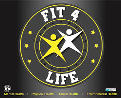
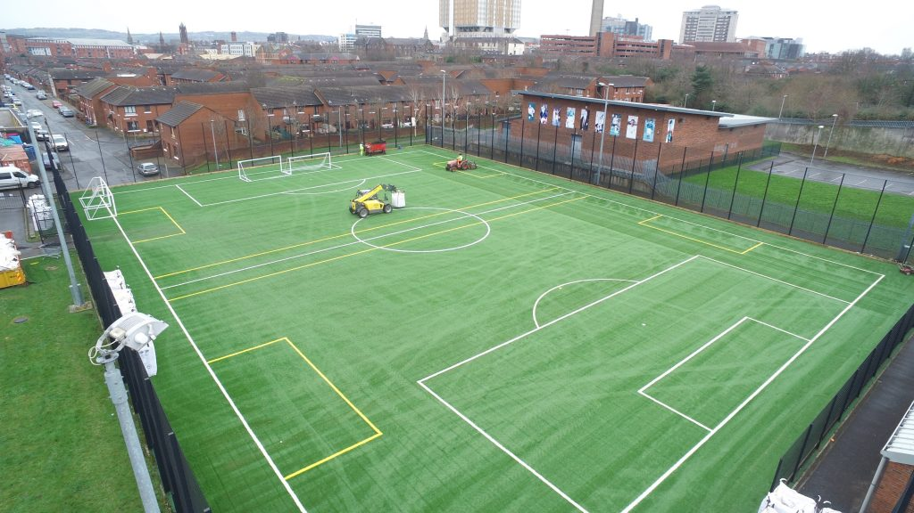

A community organisation with charitable status, working to improve lives in South Belfast since 1999.
We deliver programmes in health and wellbeing, training, employability, housing, and community safety.
From health programmes to sports facilities, we provide opportunities for the Greater Village community to thrive.

Our flagship health and wellbeing programme supporting mental health, physical health, social health, and environmental health for all ages.
Get InvolvedJob search support, CV help, interview preparation, and vocational courses to help local people develop skills and find employment.
Find Out More
Book our state-of-the-art 3G pitch at Blythefield for team training, matches, or casual games. Affordable rates for local teams and groups.
Book NowDaily housing rights and support service helping local residents with housing issues, advice, and advocacy.
Get SupportThe Adonis & Athena programmes support young people in their transition to adulthood through community education and personal development.
Join InWorking to improve safety across the Greater Village area, building stronger relationships between residents and local agencies.
Learn MoreGreater Village Regeneration Trust was established to address the physical, social, and economic challenges facing the Greater Village area of South Belfast.
As a community-led organisation, we deliver a wide range of initiatives to support local people to improve their lives. Our work spans the Blackstaff and Shaftesbury wards, helping residents of all ages and backgrounds.
With 10 dedicated staff, 25 volunteers, and over two decades of experience, we're committed to building a confident community that contributes to the overall renaissance of Belfast City.
About Our MissionWhether you want to book our 3G pitch, join a programme, access support services, or volunteer with us, we'd love to hear from you.
Contact Us Today